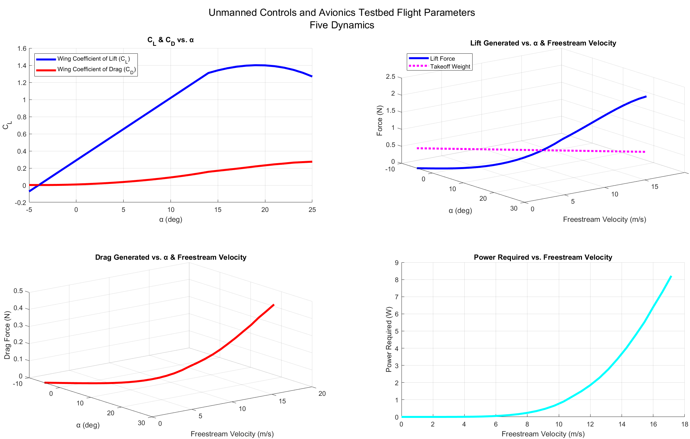

While serving as the Vice President of Engineering in Five Dynamics, I worked as the lead designer for the Unmanned Controls/Avionics Test-Bed, or "UCAT" for short starting in the 2025 Spring semester.
The intent of the project is to provide a simple flying vehicle for avionics and control systems to be tested on before these systems are implemented in the club's larger rocket projects.
The current iteration, Zephyrus Mk. 1 Version 4, is only intended to be used for testing the range of avionic communication systems and only utilizes differential thrust to turn the aircraft.
In the future, i.e. Mk. 2 and Mk. 3, the aircraft will be outfitted with ailerons, elevators, and other control surfaces in order to properly test
angle adjusting measures through flap deflection which will be crucial for controlling the fins on our club's rocket.
Zephyrus Mk. 1 Version 4 is designed with a NACA 4421 wing cross-section that is tapered at a ratio of 50% and held at a dihedral angle of 15° with 0.625-inch tall winglets on each end of its 8-inch wingspan.
It has a takeoff mass of around 59.62 grams and is projected through MATLAB calculations to produce a maximum lift of at least 1.69 N prior to stall.

The aircraft was modeled entirely in Autodesk Inventor Professional, where finite element analysis was leveraged on the top-level assembly to quantify stress and strain in flight conditions and due to gravity.
XFLR5, which uses the XFOIL library, was used to create the geometry of the NACA 4421 airfoil shape. It also allowed me to export coefficient of lift/drag vs. angle of attack data,
which was later used in MATLAB to estimate the coefficient of lift for the finite wing sections of the plane. The profile of the wings underwent an iterative process which involved
testing different wingspan and chord length configurations in MATLAB to maximize aspect ratio (thus increasing maximum coefficient of lift) while also keeping takeoff mass low.
Upon finding optimal wing geometry configurations, the wings were adjusted in Autodesk Inventor using parameterized design which allowed me to quickly change wingspan or chord length
without having to manually alter any sketches or geometric features.
One benefit to using MATLAB to analyze this aircraft's theoretical performance is the ability to assess crucial takeoff parameters. A three-dimensional graph can tell us the hypothetical
angle of attack and speed that the aircraft needs to be going in order to take off based on the intersection of the calculated takeoff weight and the lift generated vs. angle of attack curve.
This is especially important when considering that this aircraft has no landing gear; it is supposed to be tossed at a certain angle by a human as its method of takeoff. With these MATLAB visualizations,
we can roughly estimate how much force/inclination is needed to toss the aircraft for a successful takeoff.